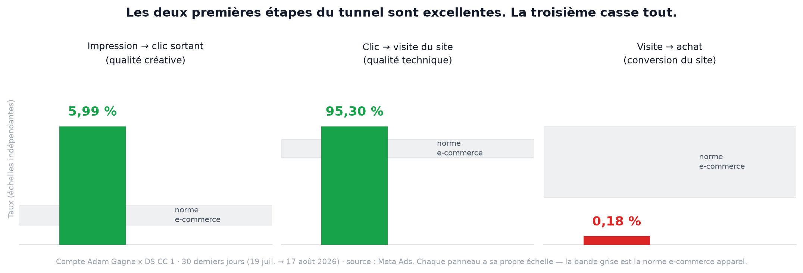
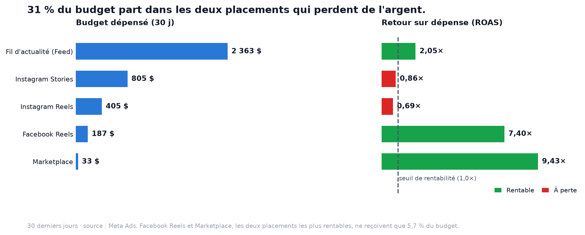
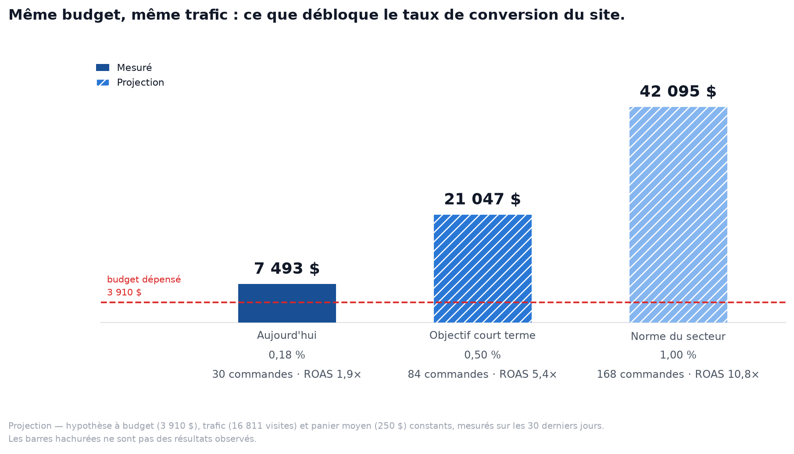

Compte Adam Gagne x DS CC 1 État des lieux et plan d'action sur 14 jours
Diagnostic du compte publicitaire, identification des postes rentables et déficitaires, et feuille de route opérationnelle pour les deux prochaines semaines.
Période analysée 19 juil. → 17 août 2026Budget sur la période 3 910 $ CADROAS mesuré 1,92×Achats 30Émis le 18 août 2026
01Résultats en un coup d'œil — 30 derniers jours
Budget dépensé
3 910 $
−1,8 % vs 30 j précédents
Stable
Valeur d'achat attribuée
7 493 $
8 879 $ sur les 30 j précédents
−15,4 %
ROAS
1,92×
2,23× sur les 30 j précédents
−13,8 %
Achats
30
27 sur les 30 j précédents
+11 %
Coût par achat
130 $
147 $ sur les 30 j précédents
−11,7 %
Comment lire ces chiffres : le compte livre plus d'achats pour moins cher
(+11 % de volume, −12 % de coût par achat), mais le revenu total baisse de 15 %.
L'explication est le panier moyen, passé de 329 $ à 250 $ (−24 %) sur la période. Le compte vend
davantage, mais des produits moins chers. Toutes les valeurs d'achat proviennent de l'attribution
Meta (fenêtre par défaut du compte).
02Portée de ce rapport
Ce rapport couvre Meta Ads uniquement (Facebook et Instagram), sur le compte
publicitaire Adam Gagne x DS CC 1. Il ne dit rien des autres canaux d'acquisition,
qui ne sont pas couverts ici — le silence sur un canal ne signifie pas qu'il est à zéro.
Non disponible dans cette édition : le recoupement avec les données de la boutique
(commandes réelles, paniers abandonnés, panier moyen côté site) n'a pas pu être fait — l'accès Shopify
demande une ré-autorisation, et la connexion Triple Whale disponible pointe vers une autre boutique.
Le taux de conversion du site présenté en section 04 est donc calculé à partir des données Meta
seules (visites de page de destination ÷ achats attribués). Il doit être confirmé côté boutique
avant d'en tirer une conclusion définitive — c'est l'action n°1 du plan.
📊
Diagnostic
Où l'argent se crée, et où il se perd
03Évolution sur 60 jours
18 juin → 18 juillet
8 879 $ valeur d'achat
Budget3 984 $
ROAS2,23×
Achats27
Coût / achat147,54 $
Répétition3,40
19 juillet → 17 août
7 493 $ valeur d'achat
Budget3 910 $
ROAS1,92× ↓
Achats30 ↑
Coût / achat130,35 $ ↓
Répétition4,54 ↑
Cumul depuis l'ouverture
16 390 $ valeur d'achat
Budget7 966 $
ROAS2,06×
Achats57
Coût / achat139,75 $
Répétition4,67
⚡ Diagnostic — pourquoi le ROAS baisse
L'audience sature. À budget identique, le nombre de comptes touchés a chuté de
25 % (85 997 → 64 837) pendant que la répétition montait de 34 % (3,40 → 4,54). Nous repayons pour
parler aux mêmes personnes, de plus en plus souvent.
Le panier moyen a reculé de 24 % (329 $ → 250 $). Le volume compense partiellement,
mais pas assez pour tenir le ROAS.
Meta signale 5 chevauchements d'audience entre nos ensembles de publicités : ils se
concurrencent aux enchères, ce qui alimente directement la répétition et le coût.
04Le point de rupture : la conversion du site

Sur les 30 derniers jours, les publicités ont généré 16 811 visites du site pour un coût
de 0,23 $ la visite. Sur ces 16 811 visites, 30 ont abouti à un achat,
soit un taux de conversion de 0,18 %. La norme du secteur (e-commerce mode et accessoires)
se situe entre 1,0 % et 2,5 %.
⚡ Ce que ça veut dire concrètement
L'acquisition n'est pas le problème. Coût par mille affichages à 13,28 $, taux de
clic à 6,71 %, coût par clic à 0,20 $, et 95,3 % des clics aboutissent bien au chargement du site :
ces quatre chiffres sont au-dessus des standards du marché.
La preuve par le retargeting. La campagne de remarketing — du trafic déjà exposé
à la marque, donc le public le plus facile à convertir — plafonne à un ROAS de 1,53× pour un coût par
achat de 179 $. Un remarketing sain se situe entre 4× et 8×. Quand même l'audience chaude ne convertit
pas, la cause n'est ni le ciblage ni la créative.
Deux causes possibles, à départager en priorité : soit le site convertit réellement
mal (page produit, prix, frais de livraison, confiance, tunnel de paiement), soit une partie des achats
n'est pas remontée à Meta (suivi incomplet, API Conversions absente ou mal dédupliquée). Les deux
appellent des actions différentes — d'où l'audit en tête du plan.
05Ce qui fonctionne
✅ Les points d'appui
Les créatives accrochent. Taux de clic de 6,71 % contre 1 à 2 % de norme sectorielle,
pour un coût par clic de 0,20 $. Nous achetons de l'attention à très bas prix.
Le coût par achat baisse de 12 % sur le mois, avec 11 % d'achats en plus à budget
constant.
Le format « 3 produits » est notre meilleur angle — les deux publicités qui l'utilisent
signent les deux meilleurs ROAS du compte (6,06× et 7,98×).
Meta note la structure du compte 81/100 à son indice d'opportunité : les fondations
sont saines, les gains identifiés sont des optimisations, pas une reconstruction.
Publicité
État
Dépense
Achats
ROAS
Coût / achat
3 shoes FR
Active
351 $
6
6,06×
58 $
3 HOODIE SARA FR
Active
59 $
1
7,98×
59 $
Travis Scott — FR
En pause
571 $
6
2,46×
95 $
New Sales Ad (catalogue)
Active
3 281 $
28
2,44×
117 $
Chrome heart
Campagne en pause
478 $
2
2,78×
239 $
Deux anomalies à corriger tout de suite : « 3 shoes FR », la publicité la plus rentable du
compte, n'a reçu que 351 $ depuis son lancement — elle est massivement sous-exploitée. Et « Travis Scott — FR »,
rentable à 2,46× pour 95 $ l'achat, est actuellement en pause.
Chiffres cumulés depuis le lancement de chaque publicité.
06Ce qui coûte de l'argent

⚠ Les quatre fuites identifiées
1 210 $ par mois sur Instagram Stories et Instagram Reels — soit 31 % du budget,
pour 971 $ de valeur générée. Ces deux placements perdent de l'argent chaque jour, pendant que
Facebook Reels (7,40×) et Marketplace (9,43×) se partagent 5,7 % du budget.
Quatre publicités déficitaires tournent encore — « Lisa immense Women FR » (0,92×),
« New arrivals — FR » (0,36×), « AD V1 — Vidéo FR » (0 achat) et la campagne « Yeezy Slides » (0,63×).
Cumul : 1 702 $ dépensés pour 1 081 $ générés, soit 621 $ de perte nette.
Le budget est mal réparti par tranche d'âge — les 25-34 ans absorbent 28 % du budget
pour 13 % des achats, tandis que les 35-54 ans réalisent 60 % des achats. Notre acheteur réel est plus
âgé que notre ciblage ne le suppose.
41 % de toute la dépense du compte repose sur une seule publicité. Le jour où elle
s'essouffle ou est refusée, l'acquisition s'arrête net. Une publicité est d'ailleurs déjà bloquée en
« refusée après examen » et devra être recréée.
Tranche d'âge
Budget
Part du budget
Achats
Part des achats
ROAS
18 – 24 ans
403 $
10 %
5
17 %
2,27×
25 – 34 ans
1 084 $
28 %
4
13 %
1,53×
35 – 44 ans
1 367 $
35 %
11
37 %
2,18×
45 – 54 ans
742 $
19 %
7
23 %
2,04×
55 – 64 ans
228 $
6 %
1
3 %
0,55×
65 ans et +
86 $
2 %
2
7 %
3,80×
Total
3 910 $
100 %
30
100 %
1,92×
07L'enjeu chiffré

Lecture : la première barre est le résultat mesuré. Les deux barres hachurées sont des
projections — elles supposent le même budget (3 910 $), le même trafic (16 811 visites) et le même panier
moyen (250 $), et ne font varier que le taux de conversion du site. Ce ne sont pas des résultats observés
ni un engagement de résultat. Elles servent à situer l'ordre de grandeur : sur ce compte,
le levier n°1 n'est pas le budget publicitaire, c'est la conversion du site.
🎯
Plan d'action — 14 jours
Du 19 août au 1er septembre 2026
08Ce que nous faisons, jour par jour
Jours 1 – 3 · 19 au 21 août
Arrêter les pertes
Couper les 4 publicités déficitairesLisa immense Women FR, New arrivals — FR, AD V1 — Vidéo FR, campagne Yeezy Slides. Libère environ 57 $ par jour.
Sortir Instagram Stories et ReelsPassage en placements manuels : Fil d'actualité, Facebook Reels et Marketplace uniquement, sauf pour les créatives conçues en vertical.
Exclure la tranche 55-64 anset rééquilibrer le ciblage vers les 35-54 ans, qui font 60 % des achats.
Lancer l'audit de suiviContrôle de l'API Conversions, de la déduplication et de la remontée de la valeur d'achat. Rapprochement commandes boutique / achats Meta.
Cible : 0 $ dépensé sur un placement à perte
Jours 4 – 7 · 22 au 25 août
Reconcentrer le budget
Réallouer les 1 210 $ mensuelsdes placements déficitaires vers le Fil d'actualité et Facebook Reels. Gain attendu à budget constant : de l'ordre de +1 500 $ de valeur d'achat par mois.
Monter « 3 shoes FR » à 30-40 $/jourdans son propre ensemble de publicités — meilleur ROAS du compte (6,06×) et jusqu'ici sous-financé.
Réactiver « Travis Scott — FR »rentable à 2,46× pour 95 $ l'achat, actuellement en pause sans raison de performance.
Fusionner les ensembles redondantsPassage d'environ 14 à 3-4 ensembles selon les 5 chevauchements signalés par Meta. Gain annoncé par la plateforme : −26 à −31 % de coût par achat.
Cible : répétition ramenée sous 3,5
Jours 8 – 14 · 26 août au 1er sept.
Relancer la croissance
Produire 4 nouvelles créativesdéclinées sur l'angle « 3 produits », le seul à dépasser 6× de ROAS. Objectif : casser la dépendance à une publicité unique qui porte 41 % de la dépense.
Recréer la publicité refuséeet débloquer les 7 ensembles que Meta signale comme limités par leur budget.
Rouvrir le remarketinguniquement si l'audit de la semaine 1 a confirmé et corrigé la cause du faible taux de conversion. Sinon, il reste en pause.
Livrer les recommandations siteparcours mobile, page produit, frais de livraison, tunnel de paiement — sur la base de l'audit.
Cible : ROAS ≥ 2,5× en sortie de période
09Comment nous mesurerons le succès au 1er septembre
Indicateur
Aujourd'hui
Cible à 14 jours
Ce qui la déclenche
ROAS
1,92×
≥ 2,50×
Coupes + réallocation des placements
Coût par achat
130 $
≤ 105 $
Fusion des ensembles redondants
Répétition
4,54
≤ 3,50
Fin du chevauchement d'audiences
Part du budget sur placements déficitaires
31 %
< 5 %
Placements manuels
Part de la dépense sur une seule publicité
41 %
≤ 25 %
4 nouvelles créatives en test
Taux de conversion du site
0,18 %
Chiffre confirmé + causes identifiées
Audit suivi et parcours d'achat
Sur la conversion du site : nous ne nous engageons pas sur un taux à 14 jours. L'objectif de
cette première quinzaine est d'établir le chiffre réel et d'en identifier les causes —
une correction de suivi et une correction de parcours d'achat n'appellent pas le même travail, ni les mêmes
délais. L'objectif chiffré sera fixé au prochain point, une fois le diagnostic posé.
10Ce dont nous avons besoin de votre côté
→ Trois accès à débloquer cette semaine
Accès à la boutique en lecture — pour rapprocher les commandes réelles des achats
remontés par Meta. C'est ce qui permettra de trancher entre « le site convertit mal » et « le suivi
sous-déclare ». Sans cet accès, l'action n°1 du plan reste bloquée.
Confirmation de la configuration de l'API Conversions — qui l'a installée, quand, et
avec quelle déduplication.
Validation de l'angle créatif « 3 produits » et accès aux visuels produits nécessaires
pour produire les 4 nouvelles publicités de la semaine 2.
Prochain point : le 1er septembre 2026, avec le bilan des 14 jours, le taux de
conversion confirmé côté boutique et l'objectif chiffré de la phase suivante.